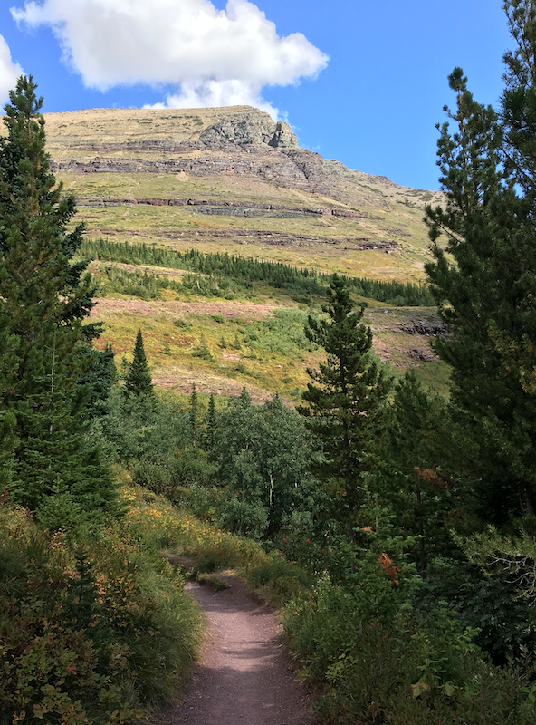

Glacier National Park is home to hundreds of species of animals and thousands of species of plants. The national park spans over three million acres and averages about three million visitors per year. When I visited Glacier with a group of friends last summer, there were many restrictions on travel. We have to book our campsite six months in advance, as well as purchase Going to the Sun Road bus passes to ensure we could secure a ride up the mountain. Our first night was spent settling in, getting our tents assembled, and ensuring our campsite was bearproof.
Our second day in Montana begain our wilderness adventure. We drove up the mountain and hiked to Hidden Lake. It was meant to be an easy first hike, totaling around 6 miles. On day two, we woke up at three in the morning to prepare for our most rigorous hike. We drove up the mountain and arrive by 5 in the morning, still dark outside. We ate oatmeal and ensured our bags had enough water, then began our sixteen mile hike on the highline trail. We used headlamps until the sun rose, especially for the early portion of the hike that took place on a steep cliff. The trail eventually led to an overlook of a glacier, making me wonder what the glacier looked like 20 years ago.
Given that none of us were avid hikers, we needed a day of rest after the Highline trail. We rented kayaks at the local livery and went out on the choppy water. We found a charming restaurant just outside of the park that served what seemed to be the best breakfast in the world. Our final day of hiking was on the opposite side of the park. We got to see the lodge, a grizzly bear, and a moose on that trip. Overall we hiked 40 miles over the course of four days.
